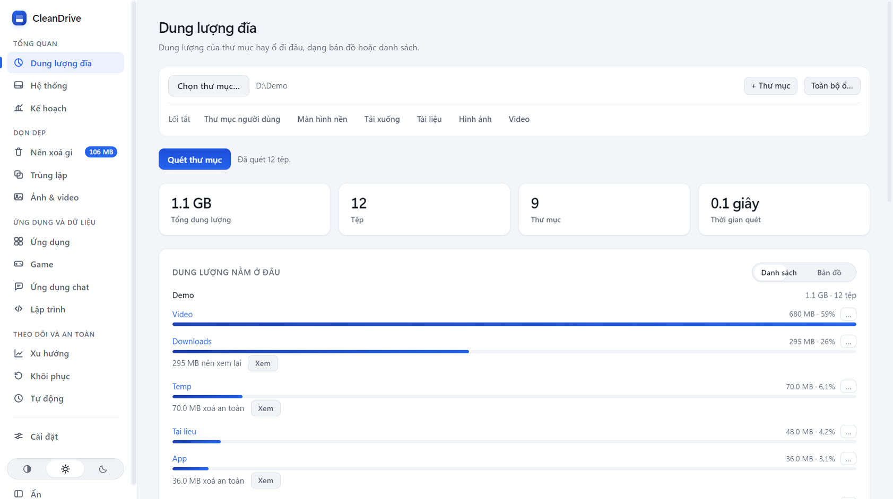
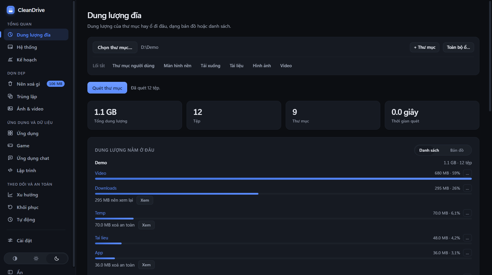
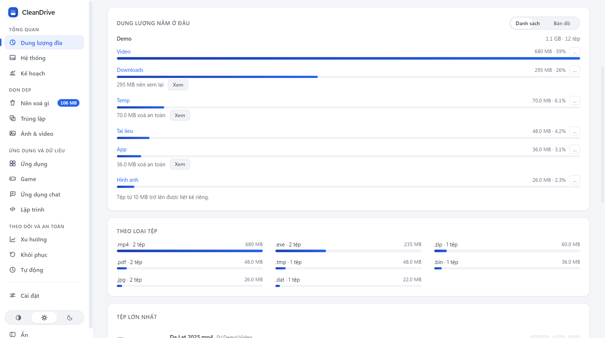
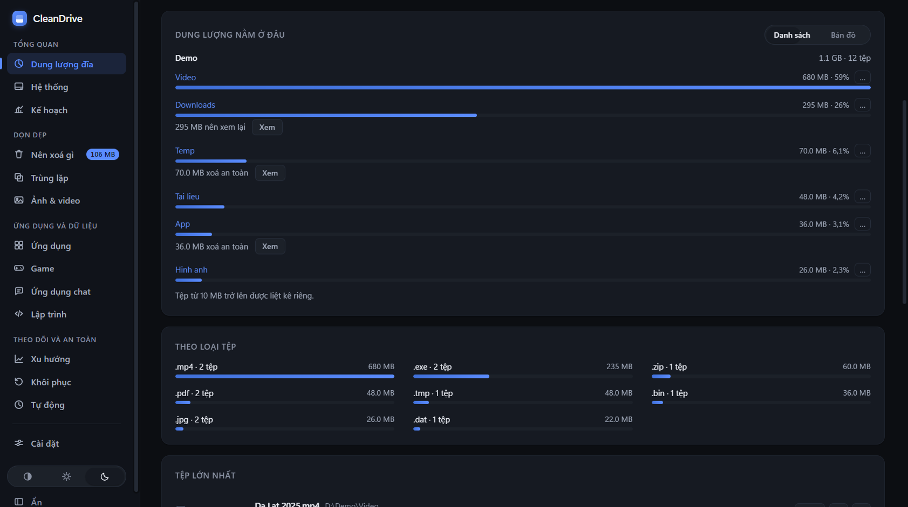
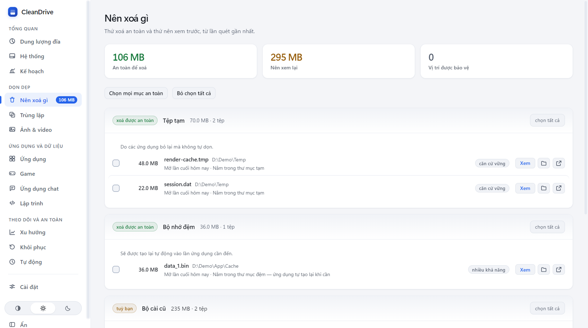
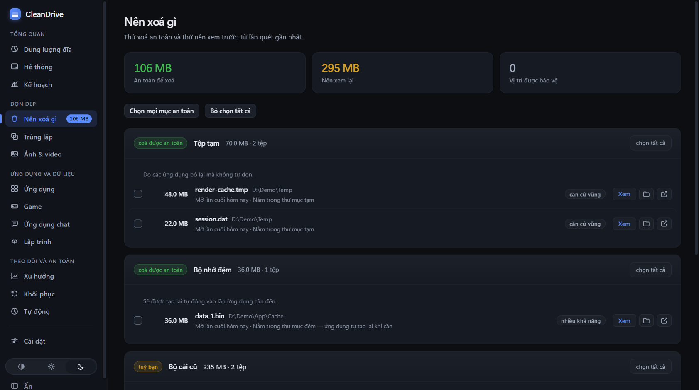

CleanDrive cho bạn thấy dung lượng đang nằm ở đâu, thứ gì xoá được và vì sao. Bạn quyết định. Không có gì bị xoá khi bạn chưa đồng ý.
Trong lúc quét, vài người bạn nhỏ đi dọc thanh tiến trình cho đỡ chờ. Bé mèo là một trong số đó.


App quét thư mục rồi xếp theo dung lượng, từ lớn tới nhỏ. Bạn xem dạng danh sách hoặc dạng bản đồ.
Mỗi thứ có thể xoá đều kèm lý do và mức chắc chắn. Có thứ xoá được an toàn, có thứ để bạn tự quyết.
Không cần tài khoản, không theo dõi bạn. App chỉ lên mạng để kiểm tra bản cập nhật, và cho bản đồ ảnh nếu bạn bật nó.
Tiếng Việt và tiếng AnhGiao diện sáng, tối hoặc màu của bạnDùng được bằng bàn phím và trình đọc màn hìnhTự cập nhật




CleanDrive không xoá gì khi bạn chưa xác nhận. Thứ bạn chọn được chuyển vào Thùng rác của Windows.
Mọi thứ app đã chuyển đều có trong danh sách. Bạn chọn và đặt lại đúng chỗ cũ.
Chuyển vào Thùng rác thì ổ đĩa chưa trống thêm, cho tới khi bạn dọn Thùng rác. App ghi riêng phần "đã chuyển" và phần "thực sự giải phóng" để bạn không bị nhầm.
Gói trả phí dành cho ai cần dọn nhiều ổ, nhiều máy, hoặc dọn đồ của lập trình viên.
Lúc này, chọn một gói trả phí trong app sẽ kích hoạt nó mà không mất tiền. Giấy phép đó hết hạn khi bắt đầu bán.
Dùng thử Pro Developer 14 ngày, không cần trả tiền, mỗi máy một lần. Hoàn tiền trong 30 ngày, không cần lý do.
Mọi thứ của Pro Developer, cộng thêm những gì phòng IT cần để quản lý nhiều máy.
Từ 2.490.000 ₫/năm, từ 5 máy. Chưa mở bán · giá dự kiến.
# cleandrive.cmd nằm trong thư mục bin nơi cài CleanDrive; # thêm thư mục đó vào PATH để gõ ngắn # chạy hồ sơ dọn dẹp ở chế độ chỉ báo cáo, không xoá gì PS C:\> cleandrive run --profile main --report-only # xem máy này sẽ gửi gì cho Console của tổ chức PS C:\> cleandrive report # xem những lần app đã chuyển hay xoá tệp PS C:\> cleandrive journal list
Có. Bản miễn phí dùng mãi mãi, trên mọi máy, không cần tài khoản. Bạn có đủ phần quét dung lượng, Nên xoá gì, Trùng lặp, Ảnh & video và Khôi phục. Gói trả phí chỉ thêm công cụ cho ai cần nhiều hơn.
Không. App không đo lường bạn dùng gì và không có tài khoản. Nó chỉ dùng mạng để kiểm tra bản cập nhật (tải về một tệp, không gửi gì đi), và cho bản đồ ảnh nếu bạn tự bật.
Thứ bạn xoá được chuyển vào Thùng rác. Trung tâm khôi phục liệt kê mọi thứ app đã chuyển và đặt chúng lại chỗ cũ. Bạn có thể đọc thêm ở phần Nếu xoá nhầm thì sao.
Bộ cài chưa được ký số, nên lần chạy đầu Windows SmartScreen có thể cảnh báo. Bạn bấm "Thông tin thêm", rồi bấm "Vẫn chạy". Sau lần đó, app tự cập nhật.
Máy dùng Windows 10 hoặc Windows 11, bản 64-bit. Bộ cài nặng 78 MB.
App tự cập nhật. Bạn không cần tải lại bộ cài.
Hiện chưa mở bán, giá trên trang là giá dự kiến. Lúc này chọn gói trả phí sẽ kích hoạt nó miễn phí, và giấy phép đó hết hạn khi bắt đầu bán. Giấy phép theo năm khi hết hạn vẫn giữ Pro trên các phiên bản ra đời trong thời gian bạn đã trả.
Cài xong, chọn một thư mục và bấm Quét. Bạn chưa phải xoá gì cả.
Phiên bản 0.6.3 · 78 MB · Windows 10/11 64-bit Xem các bản phát hànhBộ cài chưa được ký số, nên SmartScreen có thể hiện cảnh báo ở lần chạy đầu. Làm hai bước này là xong. Sau đó app tự cập nhật.
1Bấm "Thông tin thêm".
2Bấm "Vẫn chạy".